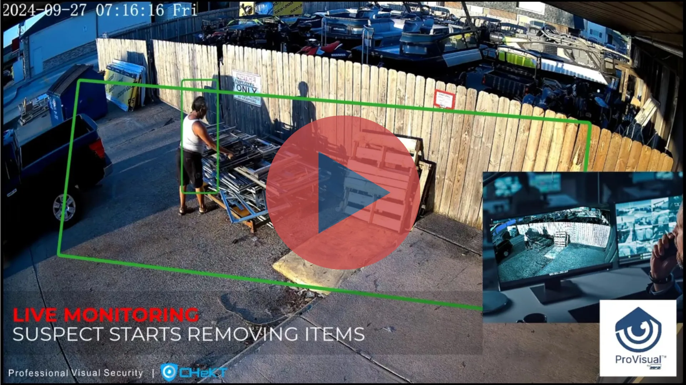

Common concerns
Theft, trespassing, vandalism, and unauthorized access can create direct losses, project delays, safety concerns, and additional work for site managers.
Help protect tools, equipment, materials, vehicles, and unfinished structures with a security approach that can adapt as the site changes.

A representative ProVisual™ monitoring image used for this use-case demonstration.
Construction and temporary job sites can contain valuable tools, machinery, materials, fuel, vehicles, and unfinished structures. They may also have changing access points, temporary fencing, limited lighting, and no permanent security staff after hours.
Theft, trespassing, vandalism, and unauthorized access can create direct losses, project delays, safety concerns, and additional work for site managers.
Teams may need visible deterrence, useful alerts, remote access to live and recorded video, and a system that can move or scale as the job site progresses.
Security by APS offers remote video surveillance options for permanent, temporary, and changing locations. The right approach depends on the site layout, power, connectivity, project phase, and response plan.
Mobile surveillance units can support temporary or changing locations and adapt as the project footprint, access routes, and high-value areas change.
AI-driven monitoring can analyze activity and help focus attention on people or unusual movement instead of producing an alert for every environmental change.
Remote monitoring can support live audio warnings, sirens, real-time alerts, and operator intervention when suspicious activity is detected.
Identify the current site boundaries, access points, equipment, materials, lighting, and areas that are likely to change next.
Consider mobile surveillance units, fixed systems, power, connectivity, camera placement, and the level of coverage needed for the site.
Define what activity should create an alert, who needs to receive it, and when live audio, operator intervention, dispatch, or notification is appropriate.
Move or expand coverage as buildings, staging areas, fencing, material storage, and traffic patterns change during construction.
Every job site is different, so results depend on the site design, equipment, monitoring plan, and response procedures. This use case shows the types of protection a properly planned system can help support.
Visible cameras, audio warnings, and active monitoring can create a stronger deterrent than an unmonitored camera alone.
Monitor areas where tools, machinery, materials, vehicles, and unfinished work may be vulnerable after hours.
Use remote access, cloud storage, and mobile or fixed deployment options as the project and site conditions evolve.
Some temporary sites may be candidates for mobile surveillance units or other flexible deployment options. A site review is needed to determine the right combination of power, connectivity, placement, and monitoring.
Mobile surveillance units are designed for temporary or changing locations. Coverage can be reviewed as fencing, staging areas, access points, and high-value zones change.
Depending on the monitoring plan, available responses may include real-time alerts, live audio warnings, sirens, operator intervention, dispatch, or notification to an authorized contact.
Remote access and cloud storage can help authorized users view live footage and review recorded events from a computer or mobile device.
Talk with Security by APS about a security approach designed around your project phase, site layout, assets, power, connectivity, and response plan.